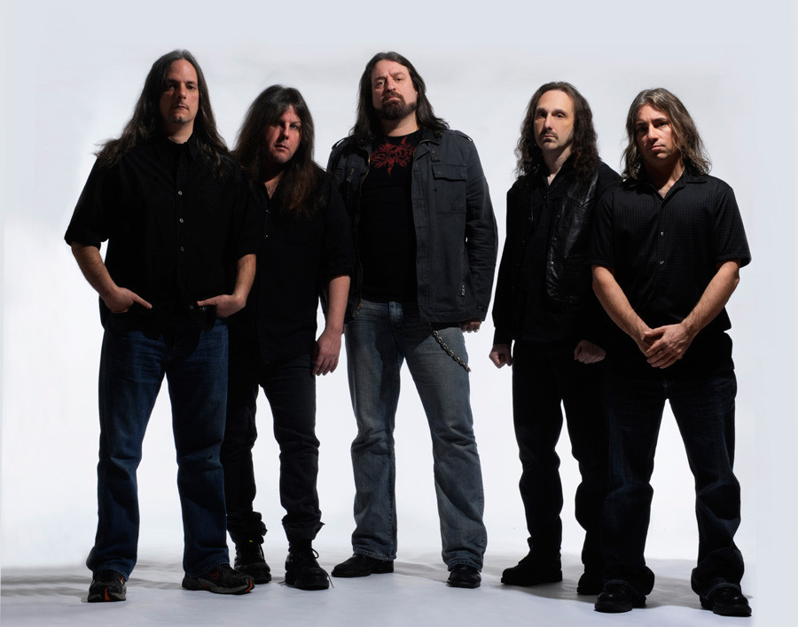

História da banda
Em abril de 1994 nos Estados Unidos de Nova Jérsei o guitarrista Michael Romeo, aproveitando o sucesso de seu demo solo The Dark Chapter resolveu montar uma banda. O primeiro membro a integrar-se foi o baixista Thomas Miller, com quem Michael já havia trabalhado muito nos últimos dez anos. A dupla então chamou para o conjunto o baterista Jason Rullo, o vocalista Rod Tyler e o tecladista Michael Pinella.
No começo de 1995, o vocalista Rod Tyler abandonou a banda durante as gravações do segundo álbum, The Damnation Game. Russell Allen assume então os deveres vocais. Apenas oito meses após o álbum de estreia, o Symphony X lança seu segundo disco. Também não foi feita nenhuma turnê para promover o álbum, pois a banda preferiu descansar o resto do ano, visto que tinham gravado os 2 álbuns seguidamente e sem quase nenhum descanso.
Já no final de 1996 a banda voltou ao estúdio para começar a gravar seu terceiro álbum The Divine Wings of Tragedy. Iniciou-se depois o trabalho para o sucessor de The Divine Wings of Tragedy. No final de 1997, pouco antes de iniciarem as gravações, o baterista Jason Rullo deixou a banda e foi substituído por Thomas Walling.
Após o lançamento de Twilight in Olympus, a banda fez turnê na Europa, mas Thomas Wailing, o novo baterista e Thomas Miller, o baixista não puderam excursionar pelo continente. O ex-baterista Jason Rullo decidiu voltar para a banda.
Ao voltar para os Estados Unidos foram feitas várias audiências para escolher o substituto definitivo de Thomas Miller, o que resultou na estrada de Mike LePond. Também em 1998, um mês depois do lançamento de Twilight in Olympus, ocorreu o lançamento do álbum Prelude to the Millennium, uma coletânea reunindo os clássicos da banda.
Em 1999 o Symphony X entra novamente em estúdio para gravar o próximo álbum, lançado no ano seguinte. V: The New Mythology Suite. Foi durante a turnê na Europa do mesmo, que houve a gravação do primeiro disco ao vivo da banda, o duplo Live on the Edge of Forever, lançado em 2001. Em 2002 deu-se o lançamento de novo álbum do Symphony X, The Odyssey, com sua faixa título de mais de 24 minutos.
Após cinco anos longe dos estúdios, o Symphony X lança o seu oitavo álbum, Paradise Lost, com lançamento em 26 de Junho de 2007.Em 2011, o grupo lança o seu oitavo disco, Iconoclast, cujas letras têm como tema "máquinas dominando tudo e a tecnologia em que nós colocamos nossa sociedade sendo nossa morte".
A banda começou a gravar seu próximo álbum em 9 de setembro com as partes de bateria e planejam lançá-lo na primavera de 2015 (outono no Hemisfério Sul). Michael LePpond afirmou que eles tinham dez canções prontas e que o álbum terá nove ou dez delas. Ele também disse que todas as letras e músicas estavam prontas e que o álbum seria menos pesado que oIconoclast: "Se eu tivesse que comparar, eu diria que é uma combinação de The Odyssey e Paradise Lost — algo por aí. Tem muito do Symphony X clássico, que eu acho que vários de nossos fãs estavam sentindo falta por alguns anos. Então eu acho que nossos fãs realmente gostarão deste álbum. Ele realmente foca apenas em composição sólida."Em 10 de abril de 2015, a banda anunciou que a masterização e a mixagem do álbum estavam prontas.